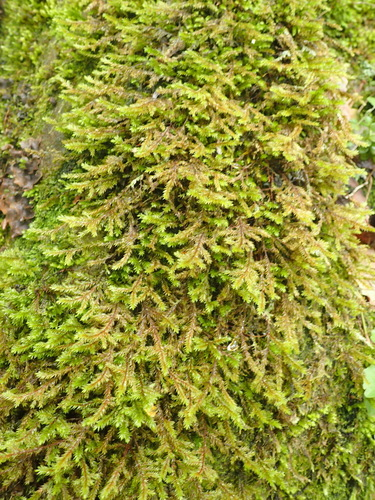

Pterobryaceae
Pterobryum Moss Family
Pterobryaceae is a moderately large family of robust pleurocarpous mosses, predominantly found as epiphytes or epiliths in tropical and subtropical regions. They exhibit a striking diversity of growth forms, often arising from creeping primary stems (stolons) to form erect, dendroid (tree-like) structures, frondose (fern-like) shapes, or long pendent strands. Their distinct architecture makes them conspicuous elements of tropical forest bryophyte communities.
Overview
The Pterobryaceae family belongs to the order Hypnales (though sometimes placed in Leucodontales or a separate Pterobryales). It comprises about 15-20 genera and 150-200 species distributed mainly across the tropics and subtropics of the world. Notable genera include Pterobryon, Pireella, Jaegerina, Calyptothecium, and Orthostichopsis.
A key characteristic is the differentiation between inconspicuous, creeping primary stems (stolons) and well-developed, often large secondary stems which display the varied growth forms (dendroid, frondose, pendent). Leaves are often differentiated depending on their position (stipe, stem, branch). The costa structure is variable within the family (single, double, absent), as is leaf cell papillosity (smooth or papillose). Sporophytes are typically lateral on the secondary stems, often with short setae leading to immersed or emergent capsules, and usually feature a reduced double peristome.
Ecologically, Pterobryaceae are important structural components of epiphytic communities in humid tropical forests, contributing significantly to the "mossy" appearance of cloud forests and rainforests. They thrive on tree trunks, branches, logs, and sometimes shaded rock faces.
Quick Facts
- Scientific Name: Pterobryaceae
- Common Name: Pterobryum Moss Family
- Number of Genera: Approximately 15-20
- Number of Species: Approximately 150-200
- Distribution: Pantropical and subtropical, extending into warm temperate regions.
- Evolutionary Group: Bryophytes - Mosses - Hypnales (or Pterobryales/Leucodontales)
Key Characteristics (Moss Morphology)
Gametophyte: Growth Form and Habit
Plants are pleurocarpous, typically robust, exhibiting diverse and often conspicuous growth forms arising from creeping primary stems (stolons). Secondary stems are well-developed, often stipitate (with a distinct stalk-like base), and may be erect and dendroid (tree-like), frondose (flattened and fern-like), arched, or long and pendent. Branching of secondary stems is variable, often pinnate or bipinnate in dendroid/frondose forms, or sparse in pendent forms.
Gametophyte: Stems
Strong differentiation between primary stolons (slender, creeping, small-leaved) and secondary stems (stouter, erect/pendent, larger-leaved). Secondary stems may have a central strand, or it may be absent.
Gametophyte: Leaves
Leaves are often differentiated between the stipe, main secondary stem axis, and branches. They are typically crowded, often concave or plicate (folded). Leaf shape is variable (ovate, lanceolate, oblong). Leaf apices are usually acute or acuminate. Margins are typically entire or serrulate near the apex. The costa is highly variable among genera: it can be single and strong (ending near apex), short and double, or entirely absent. Leaf cells are typically short (isodiametric, rhombic, short-rectangular) to moderately elongated (linear), usually thick-walled, and can be smooth or papillose.
Sporophyte: Seta, Capsule, and Peristome
Sporophytes arise laterally from secondary stems. Sexual condition is typically dioicous. The seta is usually short, resulting in the capsule being immersed, emergent, or shortly exserted (though longer setae occur in some genera). The capsule is typically erect and symmetrical, ovoid to cylindric. The operculum is usually rostrate. The peristome is double, but often reduced, particularly the endostome, which may have narrow segments, rudimentary cilia, and a low basal membrane. Exostome teeth are typically 16, lanceolate.
Field Identification (Mosses)
Identifying Pterobryaceae involves recognizing their distinct growth forms, tropical habitat, and often epiphytic nature:
Primary Identification Features (Field/Hand Lens)
- Growth Form: Look for conspicuous dendroid (tree-like), frondose (fern-like), or long pendent habits arising from less obvious creeping stems.
- Habitat: Primarily epiphytic or epilithic in humid tropical/subtropical forests.
- Robust Size: Plants are often relatively large and noticeable.
- Stipe (often): Dendroid or frondose forms often have a distinct, sparsely-leaved stalk (stipe) at the base of the secondary stem.
- Immersed/Emergent Capsules (often): If fertile, capsules are frequently nestled among leaves on short setae.
Secondary Identification Features (Microscope often needed)
- Leaf Differentiation: Observe differences in leaves on stolons, stipes, stems, and branches.
- Costa Structure: Determine if costa is single, double, or absent, and its length.
- Cell Shape and Papillosity: Examine cell shape (short vs. linear) and check for papillae.
- Peristome Details: Observe the structure of the often reduced double peristome (requires mature capsules).
Common Confusion Points (Other Mosses)
- Neckeraceae (Thamnobryum, Porotrichum): Also includes dendroid epiphytic/epilithic mosses, but often placed in Neckeraceae; typically have complanate branching and different peristome details.
- Hypopterygiaceae (Hypopterygium): Distinctly dendroid or frondose but possess well-developed underleaves (amphigastria) on stems and branches. Often has bordered leaves.
- Meteoriaceae: Includes pendent epiphytes, but typically less robust, more filiform, with radially arranged leaves.
- Spiridentaceae: Robust tropical mosses, sometimes dendroid, but with very different, highly specialized peristomes.
- Lembophyllaceae (some genera): Can be robust epiphytes, but typically lack strong differentiation into stolons and dendroid/pendent secondary stems, often ecostate.
Field Guide Quick Reference (Mosses)
Look For:
- Dendroid, frondose, or pendent growth forms
- Arising from creeping stolons
- Epiphytic/epilithic in tropics/subtropics
- Robust size
- Often immersed/emergent capsules
Key Variations:
- Specific growth form (dendroid vs. pendent etc.)
- Branching pattern
- Costa structure (single vs. double vs. absent)
- Cell papillosity
- Leaf shape and differentiation
Notable Genera
Some representative genera of the Pterobryaceae family include:

Pterobryon
(Genus)
The type genus. Often exhibits a dendroid or sub-dendroid habit. Leaves typically ovate-lanceolate, costa often short and double or absent. Capsules immersed or emergent.

Pireella
(Genus)
Often forms dense tufts with erect, pinnately branched secondary stems, sometimes appearing somewhat dendroid. Leaves typically ovate, concave, with a short double costa or none. Capsules immersed.

Jaegerina
(Genus)
Robust mosses, often pendent or forming large tufts. Leaves broad, often concave or plicate, costa usually single and strong. Capsules immersed or emergent on very short setae.

Calyptothecium
(Genus)
Often forms glossy, pendent strands or mats. Shoots frequently complanate. Leaves typically ovate-lanceolate, often asymmetric, costa usually short and double or absent. Calyptra often distinctively mitrate and covering much of the capsule.

Orthostichopsis
(Genus)
Forms long pendent strands. Stems often appear angular due to leaf arrangement (leaves sometimes in more than 2 distinct rows). Leaves typically ovate, concave, costa short/double or absent.
Phylogeny and Classification
Pterobryaceae is typically classified within the order Hypnales, although alternative placements in Leucodontales or a distinct Pterobryales have been proposed historically or occasionally resurface based on certain morphological interpretations or specific molecular analyses. Most modern treatments considering broad molecular data place it within Hypnales, often related to other primarily epiphytic or epilithic pleurocarpous lineages.
The family represents a significant evolutionary radiation into diverse growth forms (dendroid, frondose, pendent) adapted for epiphytic life in tropical and subtropical environments. The differentiation between stolons and elaborate secondary stems is a key architectural feature. The variability in costa structure and cell papillosity within the family suggests multiple evolutionary pathways even within this specialized niche. The common trend towards reduced sporophytes (short setae, immersed/emergent capsules, reduced peristomes) is shared with several other epiphytic pleurocarp lineages.
Position in Plant Phylogeny
- Kingdom: Plantae
- Division: Bryophyta (Mosses)
- Class: Bryopsida
- Order: Hypnales (or Pterobryales / Leucodontales)
- Family: Pterobryaceae
Evolutionary Significance
The Pterobryaceae family is significant for:
- Diversity of Growth Forms: Showcases remarkable architectural diversity (dendroid, frondose, pendent) within a single family, adapted to epiphytic life.
- Tropical Epiphyte Radiation: Represents a major lineage of mosses specialized for tropical and subtropical epiphytic habitats.
- Stem Differentiation: The clear distinction between creeping stolons and elaborate secondary stems is a notable evolutionary feature.
- Convergent Evolution: Dendroid and pendent habits have evolved multiple times in different moss lineages, with Pterobryaceae providing key examples.
- Sporophyte Reduction Trends: Contributes to understanding the common evolutionary trend of sporophyte reduction in epiphytic pleurocarps.